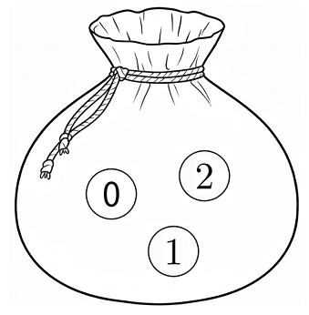

주머니에 공이 3개이고 임의로 하나를 꺼내니까 세 공이 같은 확률로 나와. 먼저 한 번 꺼낼 때의 수를 확률변수로 정하자.
평균은 (값)×(확률)을 모두 더한 것이고, 분산은 제곱의 평균에서 평균의 제곱을 빼면 돼.
꺼낸 공을 다시 넣으니까 다섯 번 모두 같은 주머니에서 같은 확률로 꺼내. 그래서 는 모집단 에서 뽑은 크기 5인 표본의 평균이야.
주의표본평균의 분산은 모분산을 표본의 크기 5로 나눈 거야. 25로 나누거나 표준편차를 5로 나누지 않게 조심해.
다섯 수가 각각 0, 1, 2 중 하나라서 합은 0부터 10까지의 정수야. 그러니까 의 값은 꼴뿐이야.
판단합 안에 과 일 확률이 같이 있으니까, 의 값의 제곱에 확률을 곱해 더한 꼴로 바꾸자. 그게 의 평균이라서 분포를 하나하나 구할 필요가 없어.
주의㉢의 합은 부터지만 인 항은 0이라 더해도 같아. 그래야 의 모든 값에 대한 합이 돼.
도 확률변수니까 분산 공식이 그대로 성립해. 그래서 와 로 제곱의 평균을 거꾸로 구할 수 있어.